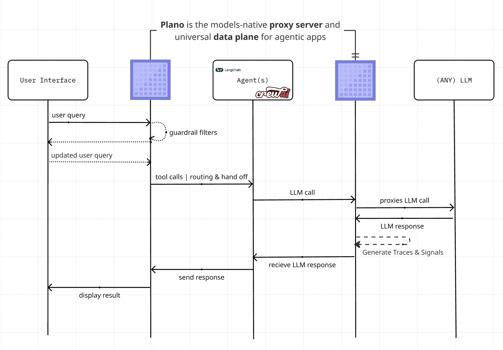

Intro to Plano
Building agentic demos is easy. Delivering agentic applications safely, reliably, and repeatably to production is hard. After a quick hack, you end up building the “hidden AI middleware” to reach production: routing logic to reach the right agent, guardrail hooks for safety and moderation, evaluation and observability glue for continuous learning, and model/provider quirks — scattered across frameworks and application code.
Plano solves this by moving core delivery concerns into a unified, out-of-process dataplane. Core capabilities:
🚦 Orchestration: Low-latency orchestration between agents, and add new agents without changing app code. When routing lives inside app code, it becomes hard to evolve and easy to duplicate. Moving orchestration into a centrally managed dataplane lets you change strategies without touching your agents, improving performance and reducing maintenance burden while avoiding tight coupling.
🛡️ Guardrails & Memory Hooks: Apply jailbreak protection, content policies, and context workflows (e.g., rewriting, retrieval, redaction) once via Filter Chains at the dataplane. Instead of re-implementing these in every agentic service, you get centralized governance, reduced code duplication, and consistent behavior across your stack.
🔗 Model Agility: Route by model, alias (semantic names), or automatically via preferences so agents stay decoupled from specific providers. Swap or add models without refactoring prompts, tool-calling, or streaming handlers throughout your codebase by using Plano’s smart routing and unified API.
🕵 Agentic Signals™: Zero-code capture of behavior signals, traces, and metrics consistently across every agent. Rather than stitching together logging and metrics per framework, Plano surfaces traces, token usage, and learning signals in one place so you can iterate safely.
Built by core contributors to the widely adopted Envoy Proxy <https://www.envoyproxy.io/>_, Plano gives you a production‑grade foundation for agentic applications. It helps developers stay focused on the core logic of their agents, helps product teams shorten feedback loops for learning, and helps engineering teams standardize policy and safety across agents and LLMs. Plano is grounded in open protocols (de facto: OpenAI‑style v1/responses, de jure: MCP) and proven patterns like sidecar deployments, so it plugs in cleanly while remaining robust, scalable, and flexible.
In practice, achieving the above goal is incredibly difficult. Plano attempts to do so by providing the following high level features:
{kind=link}

High-level network flow of where Plano sits in your agentic stack. Designed for both ingress and egress prompt traffic.
Engineered with Task-Specific LLMs (TLMs): Plano is engineered with specialized LLMs that are designed for fast, cost-effective and accurate handling of prompts. These LLMs are designed to be best-in-class for critical tasks like:
Agent Orchestration: Plano-Orchestrator is a family of state-of-the-art routing and orchestration models that decide which agent(s) or LLM(s) should handle each request, and in what sequence. Built for real-world multi-agent deployments, it analyzes user intent and conversation context to make precise routing and orchestration decisions while remaining efficient enough for low-latency production use across general chat, coding, and long-context multi-turn conversations.
Function Calling: Plano lets you expose application-specific (API) operations as tools so that your agents can update records, fetch data, or trigger determininistic workflows via prompts. Under the hood this is backed by Arch-Function-Chat; for more details, read Function Calling.
Guardrails: Plano helps you improve the safety of your application by applying prompt guardrails in a centralized way for better governance hygiene. With prompt guardrails you can prevent
jailbreak attemptspresent in user’s prompts without having to write a single line of code. To learn more about how to configure guardrails available in Plano, read Prompt Guard.
Model Proxy: Plano offers several capabilities for LLM calls originating from your applications, including smart retries on errors from upstream LLMs and automatic cut-over to other LLMs configured in Plano for continuous availability and disaster recovery scenarios. From your application’s perspective you keep using an OpenAI-compatible API, while Plano owns resiliency and failover policies in one place. Plano extends Envoy’s cluster subsystem to manage upstream connections to LLMs so that you can build resilient, provider-agnostic AI applications.
Edge Proxy: There is substantial benefit in using the same software at the edge (observability, traffic shaping algorithms, applying guardrails, etc.) as for outbound LLM inference use cases. Plano has the feature set that makes it exceptionally well suited as an edge gateway for AI applications. This includes TLS termination, applying guardrails early in the request flow, and intelligently deciding which agent(s) or LLM(s) should handle each request and in what sequence. In practice, you configure listeners and policies once, and every inbound and outbound call flows through the same hardened gateway.
Zero-Code Agent Signals™ & Tracing: Zero-code capture of behavior signals, traces, and metrics consistently across every agent. Plano propagates trace context using the W3C Trace Context standard, specifically through the traceparent header. This allows each component in the system to record its part of the request flow, enabling end-to-end tracing across the entire application. By using OpenTelemetry, Plano ensures that developers can capture this trace data consistently and in a format compatible with various observability tools.
Best-In Class Monitoring: Plano offers several monitoring metrics that help you understand three critical aspects of your application: latency, token usage, and error rates by an upstream LLM provider. Latency measures the speed at which your application is responding to users, which includes metrics like time to first token (TFT), time per output token (TOT) metrics, and the total latency as perceived by users.
Out-of-process architecture, built on Envoy: Plano takes a dependency on Envoy and is a self-contained process that is designed to run alongside your application servers. Plano uses Envoy’s HTTP connection management subsystem, HTTP L7 filtering and telemetry capabilities to extend the functionality exclusively for prompts and LLMs. This gives Plano several advantages:
Plano builds on Envoy’s proven success. Envoy is used at massive scale by the leading technology companies of our time including AirBnB, Dropbox, Google, Reddit, Stripe, etc. Its battle tested and scales linearly with usage and enables developers to focus on what really matters: application features and business logic.
Plano works with any application language. A single Plano deployment can act as gateway for AI applications written in Python, Java, C++, Go, Php, etc.
Plano can be deployed and upgraded quickly across your infrastructure transparently without the horrid pain of deploying library upgrades in your applications.